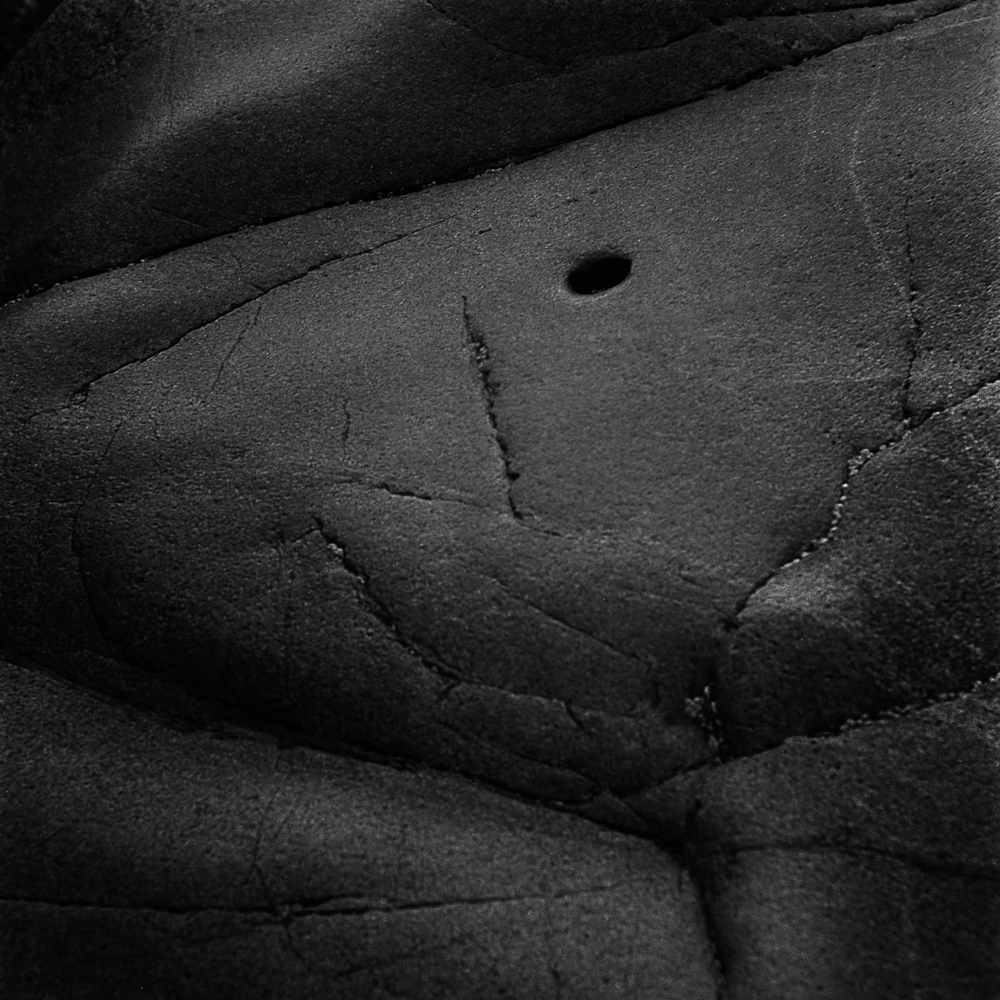
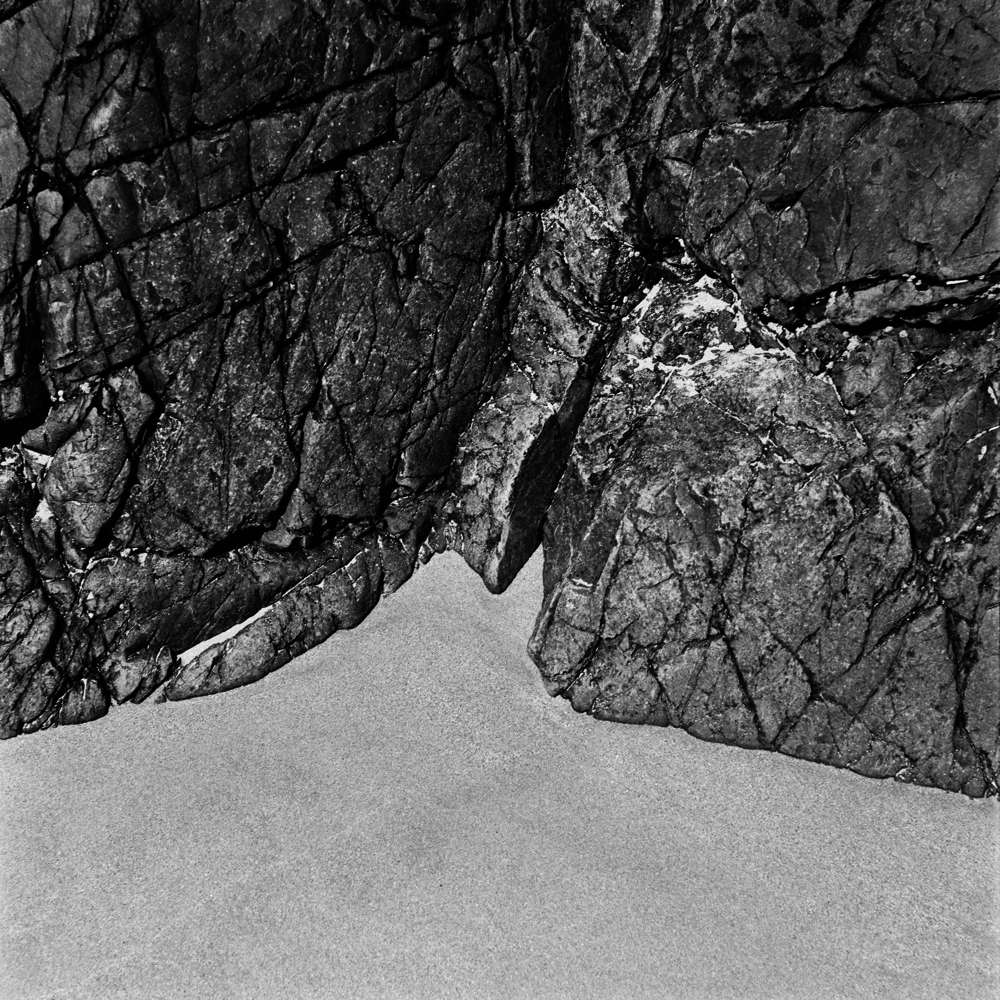
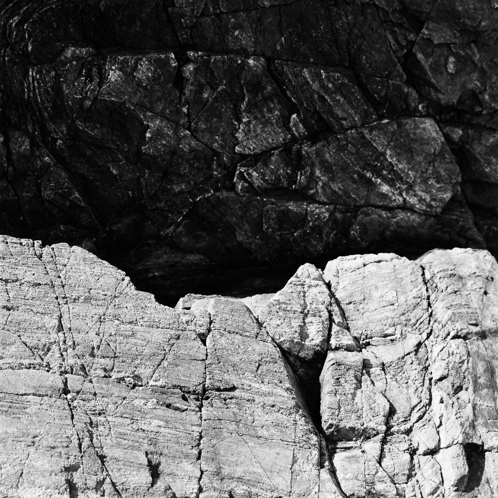
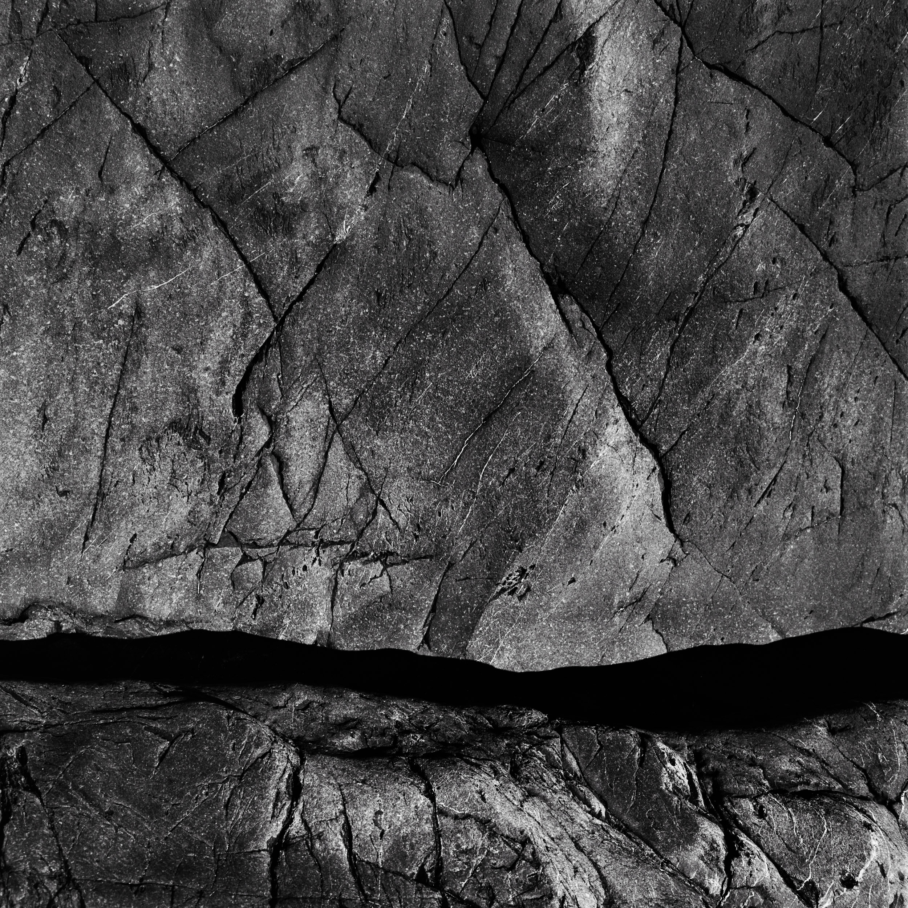
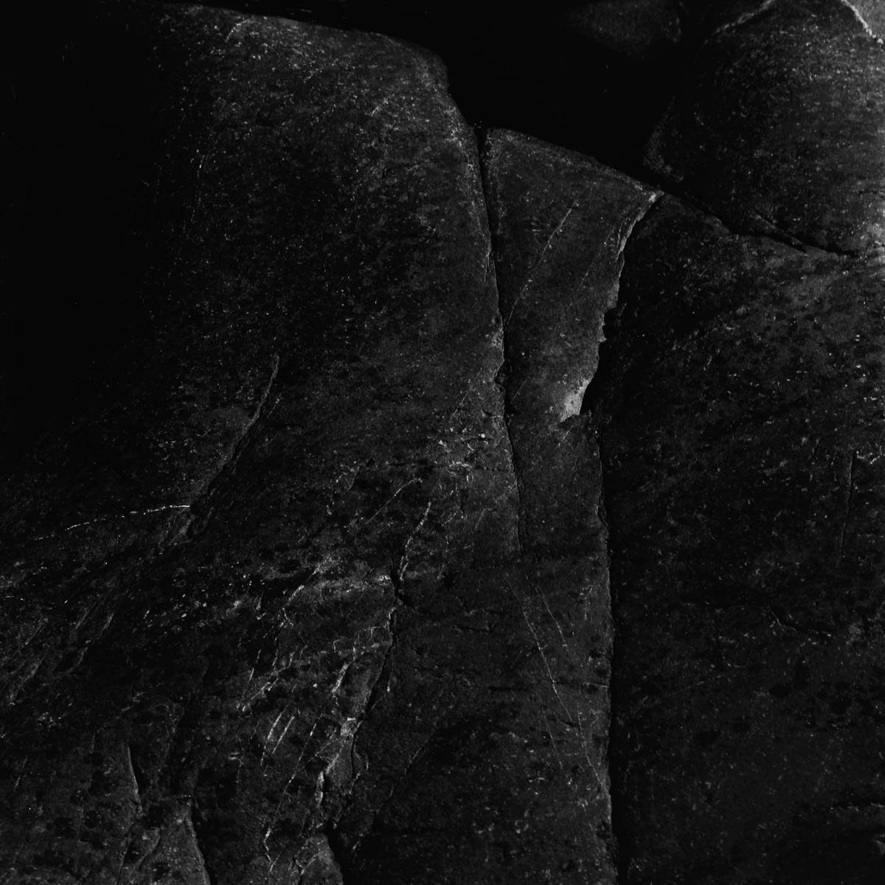
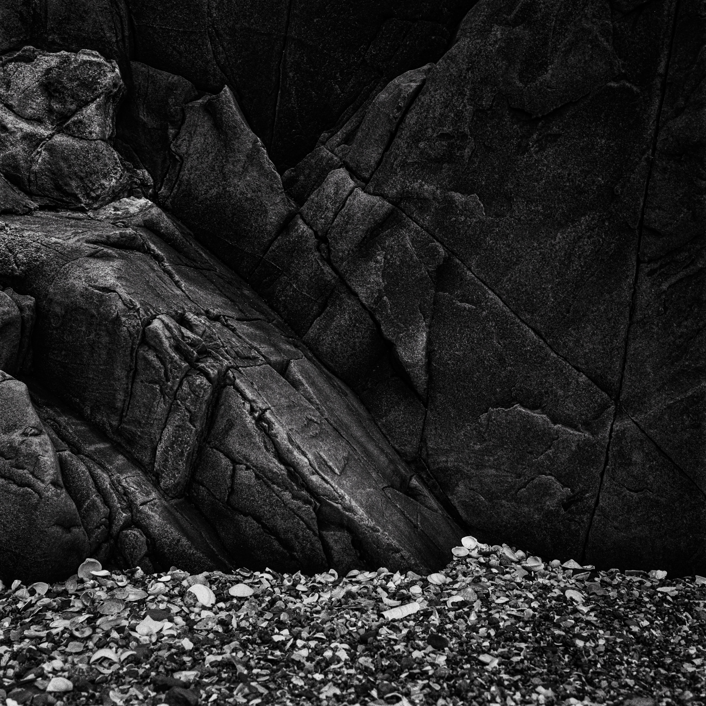
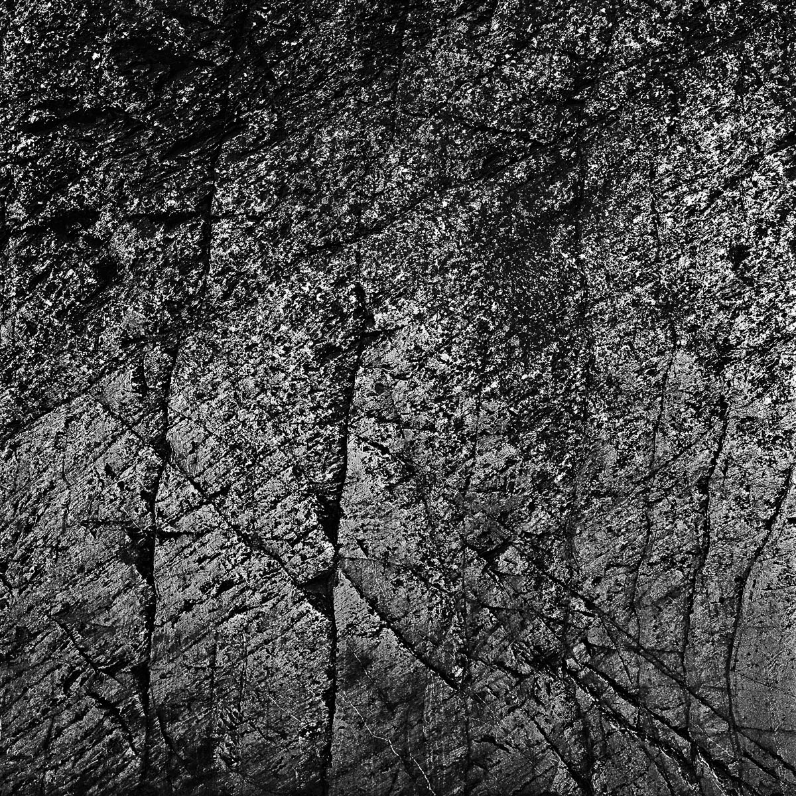
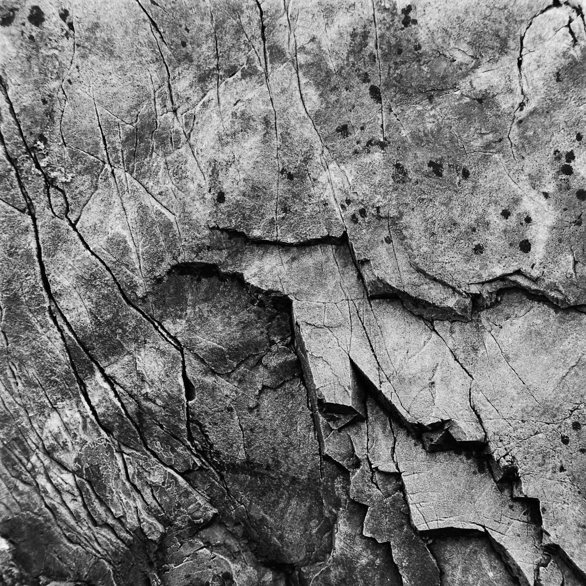

Analog
This photographic series, created over several years using black-and-white analog film, reflects a fascination with time and its traces. The granite cliffs of Northern Brittany, shaped by tides and winds over millennia, embody a quiet steadiness amidst the ever-changing world. Their intricate patterns and textures evoke a profound sense of permanence—a presence that predates us and will endure long after we are gone.
The choice of analog photography was intentional, allowing the process itself to slow down and align with the subject. Working with film demands patience and reflection, fostering a deeper connection with the cliffs. Returning to the same spot repeatedly over the years, I grew familiar with the rock, the textures, and shifting light, forming an intimate relationship with this enduring and steadfast landscape.
By stripping away distractions and focusing on the essential—the interplay of light, shadow, and form—these images invite viewers to pause and reflect on the deep rhythms of the earth. Here, erosion and creation are inseparable forces, and the enduring steadiness of granite contrasts with the fleeting nature of our existence.







